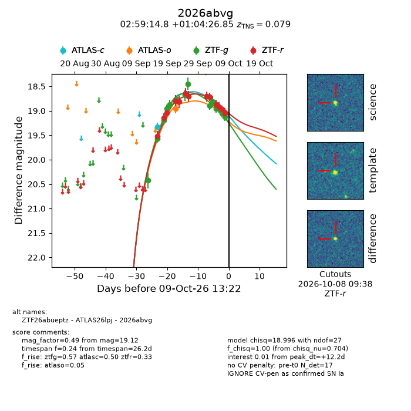
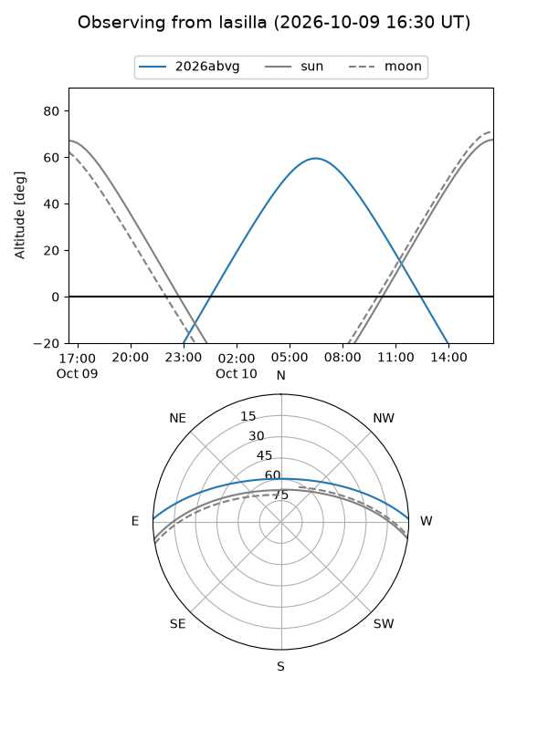
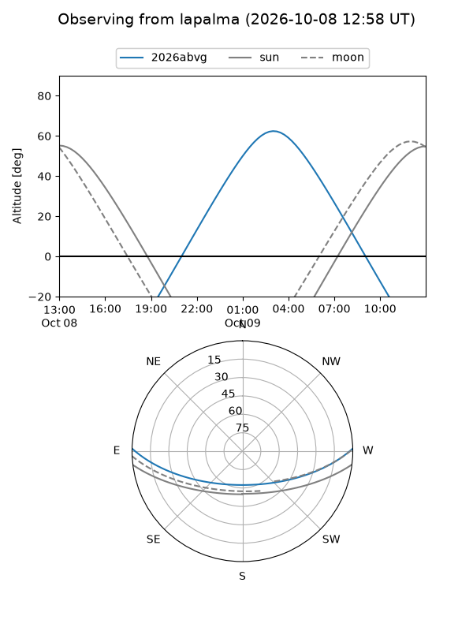
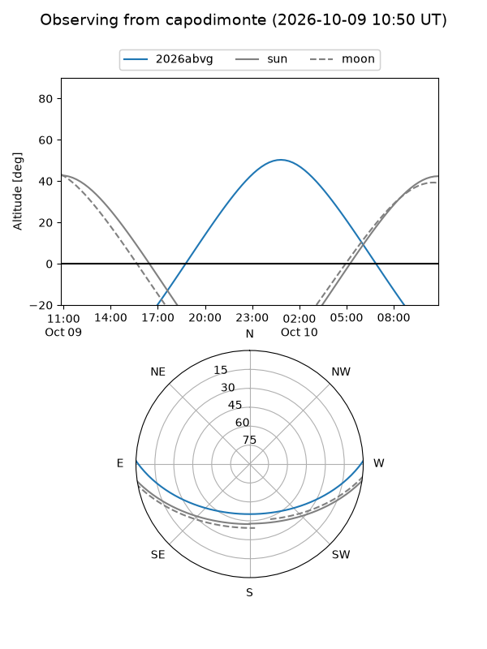
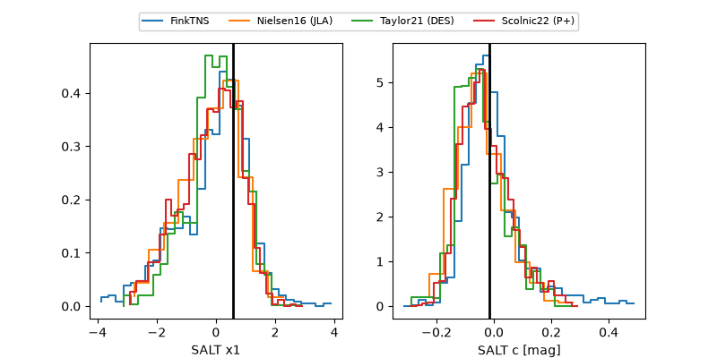

2026abvg
Target 2026abvg at 2026-10-09 13:25
Aliases and brokers:
FINK-ZTF: ztf.fink-portal.org/ZTF26abueptz
Lasair-ZTF: lasair-ztf.lsst.ac.uk/objects/ZTF26abueptz
ALeRCE-ZTF: alerce.online/object/ZTF26abueptz
YSE-PZ: ziggy.ucolick.org/yse/transient_detail/2026abvg
TNS name: wis-tns.org/object/2026abvg
Direct TNS query: direct search
alt names
ZTF26abueptz (ztf,fink_ztf)
2026abvg (tns,yse)
ATLAS26lpj (atlas)
Coordinates:
equatorial (ra, dec) = 44.8118,+1.07412
equatorial (HMS+DMS) = 02:59:14.82,+01:04:26.85
galactic (l, b) = (175.6024,-48.28506)
Flags:
TNS type: SN Ia
TNS redshift: 0.0790
peak dt: +12.2
Photometry:
last atlasc=19.33, atlaso=19.07, ztfg=19.12, ztfr=19.05
1 atlasc, 2 atlaso, 15 ztfg, 13 ztfr detections
Lightcurve

Visibility



Additional plots
